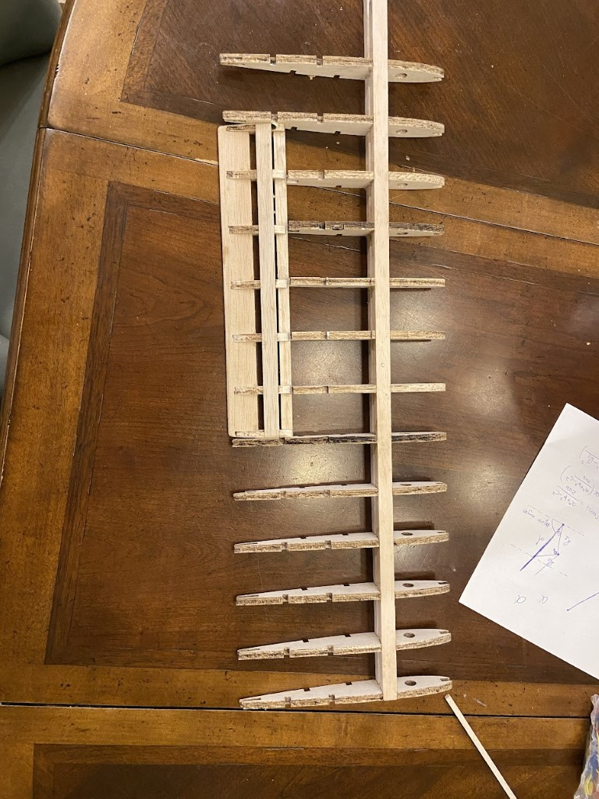
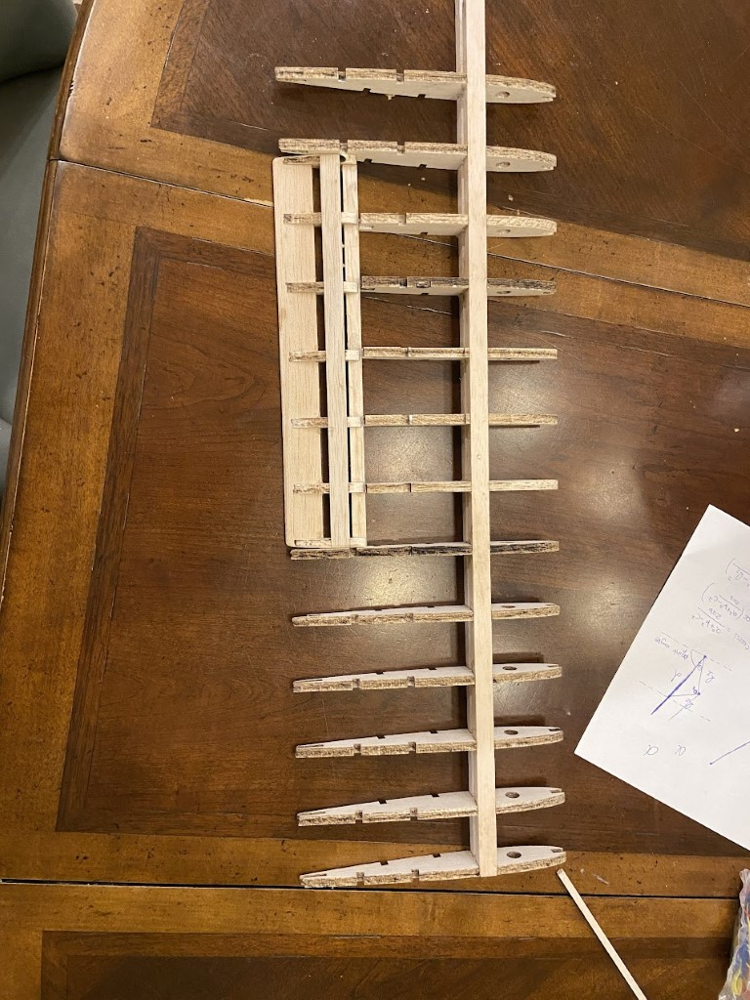

Projects
I've worked on a wide variety of projects, both personal and professional. I've included a list of some of my favorites below.
- Designed a musical electric arc generator from scratch using a novel method (a modified ZVS circuit) and used CAD to create a custom PCB which was manufactured in China.
- Created a custom quadcopter flight controller in C/C++ using an RP2040 microcontroller. This flight controller uses an IMU to automatically stabilize the quadcopter using a PID feedback system to control the propellers.
- Developed and trained a machine learning model using Tensorflow and Keras to recognize handwritten digits and characters using the MNIST dataset. This model was trained using a convolutional neural network and achieved 97% accuracy.
- Designed and manufactured a balsa wood RC airplane using CAD using 3D printed parts and laser-cut balsa wood.
- Built a web application using Flask and Python to track orders, print labels, and interface with Sqauare's API to process payments for a local drink business.
- Developed an open-source driver for the RP2040 to interface with HUB75 LED interfaces.
- Built a Flask web application using a Raspberry Pi 2W to wirelessly control outdoor WS2812 LEDs.
 
